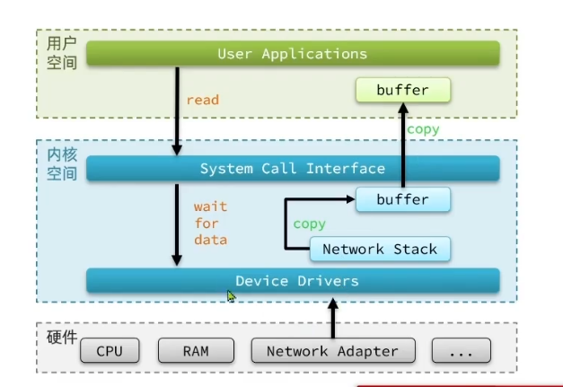
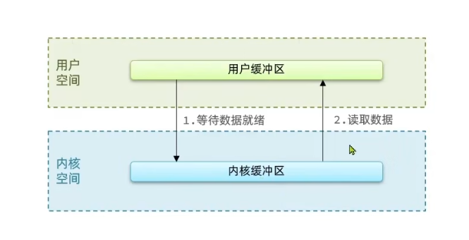
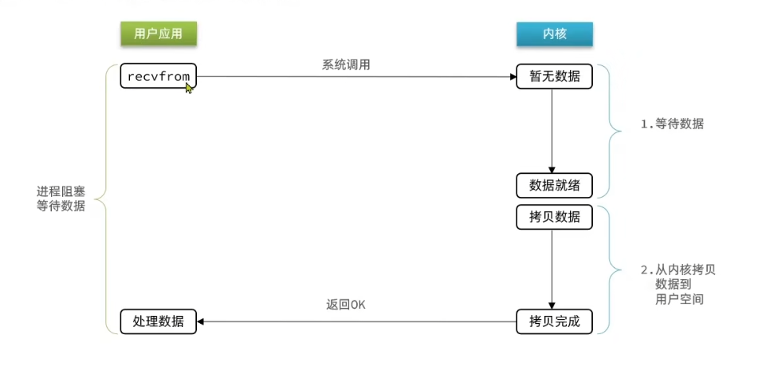
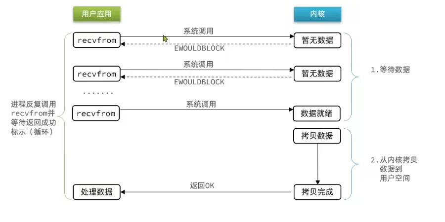
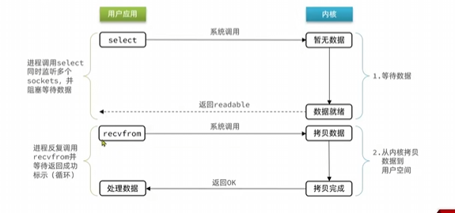
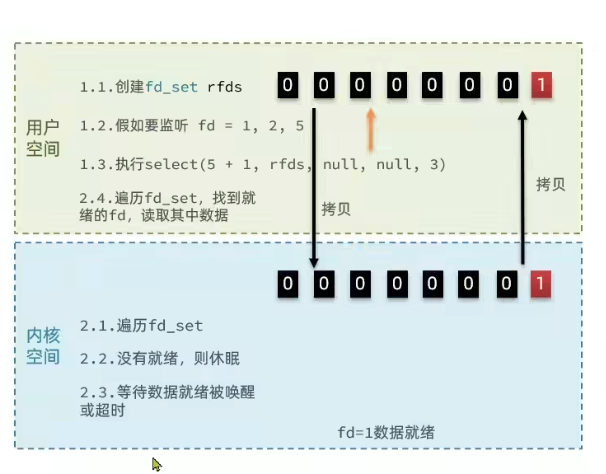
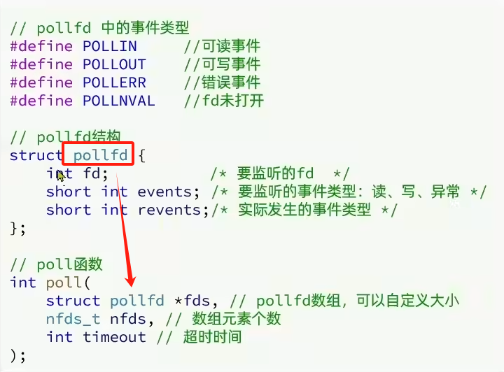
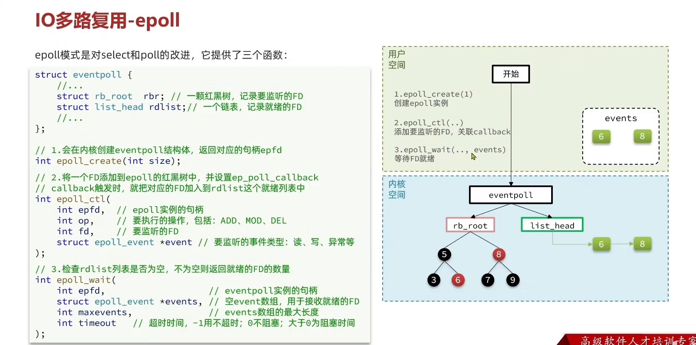

Redis网络模型
Redis 网络模型
内核空间和用户空间
为了避免用户应用导致冲突甚至内核崩溃，把两部分分开
内核空间：可以执行特权命令（R0）
用户空间：只能执行受限的命令（R3）
用户态，内核态相互切换
IO操作速度
来回拷贝
等待

阻塞IO
（阻塞等待）用户等待数据就绪
（阻塞等待）拷贝内核


非阻塞IO
（CPU空转）待数据
（阻塞等待）拷贝

IO多路复用
单线程情况下，依次处理一个 socket，如果前面的未就绪，线程阻塞，所有其他 socket 必须等待，性能很差。
方案：
多线程（上下文切换）
就绪的才来
文件描述符：一个无符号整数，关联一个文件（一切皆文件）
IO多路复用：单线程监听多个 FD，并在某个可读可写得到通知，从而避免无效等待，充分利用 CPU 资源。
一次传了多个 FD，单线程监听。
三种不同形式，差别在于通知方式
只通知有无就绪：
select
poll
通知哪个就绪：
- epoll

select
select 函数会传递 fd 上限 和 fd_set（按照读，写，异常分为三类，本质上是 bitmap），还有超时时间
来回拷贝 fd_set （bitmap）
需要遍历得知哪个就绪
数量限制

poll
相比于 select 用数组代替固定的 bitmap，数量无上限。
来回拷贝没有解决
遍历获取也没有解决
流程：
创建 pollfd 数组，自定义大小，写数据
调用 poll
内核遍历 fd
就绪或者超时，拷贝 pollfd 数组到用户空间
用户进程判断 n 是否大于 0
大于 0 则遍历 pollfd 数组，找到就绪的 fd

epoll
红黑树和链表配合，解决了来回拷贝和遍历问题。
提供三个函数
epoll_create，创建 epoll 实例（红黑树记录监听，链表记录就绪）
epoll_ctl，增删改红黑树，比如新增监听的 fd，里面有回调函数（内容是就绪就加入链表）
epoll_wait ，检查链表列表是否为空，不为空则返回就绪的FD数量。拷贝就绪的 fd 到内存地址

对于某一个 fd 只添加一次就可以，只拷贝就绪的。减少了拷贝的数量
返回的是就绪列表，解决了遍历问题
数量问题，数量无限，红黑树遍历波动小